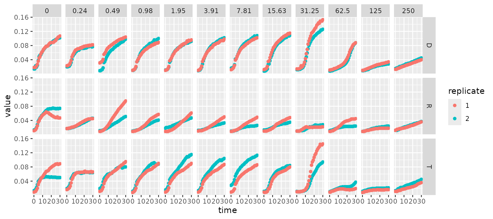
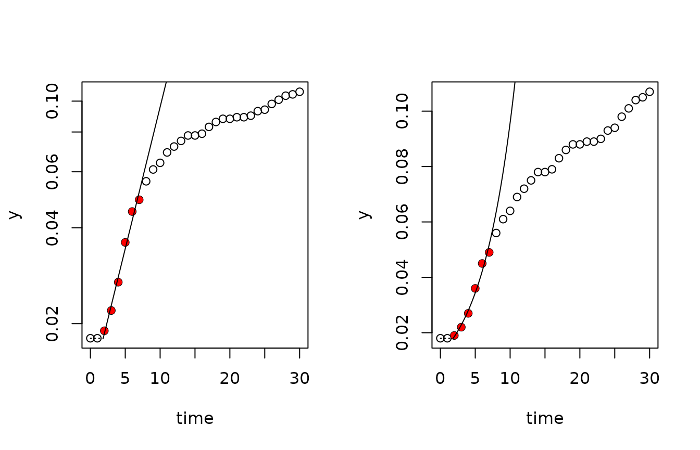
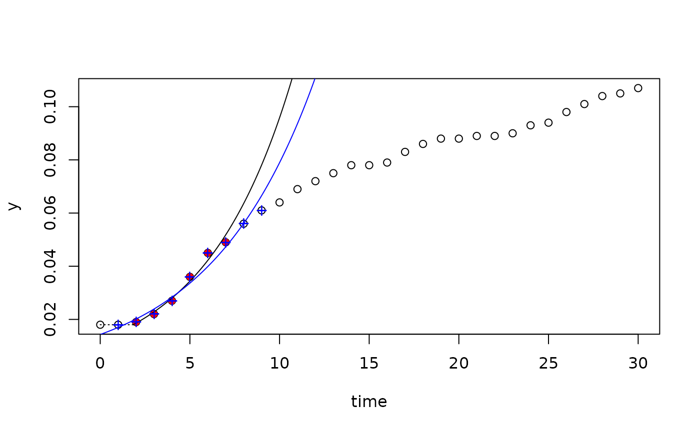
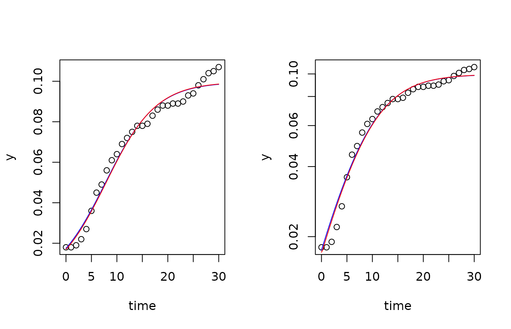
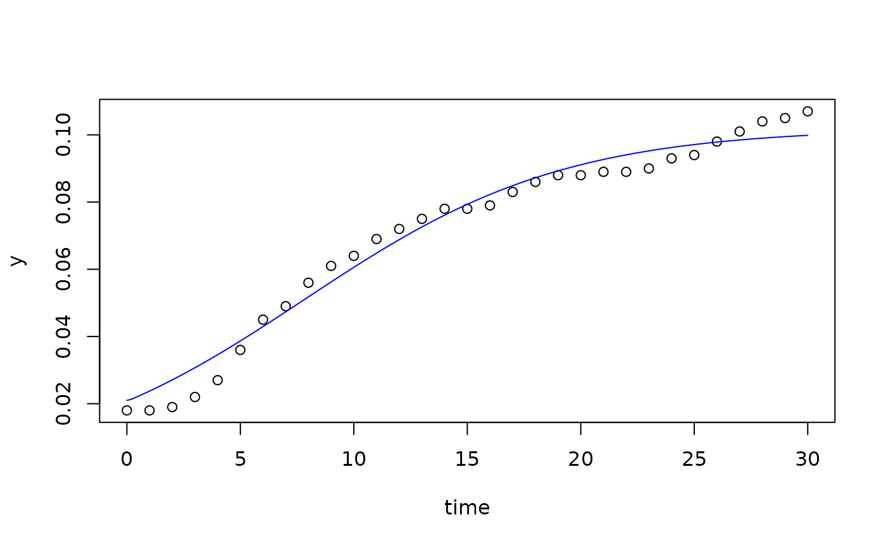
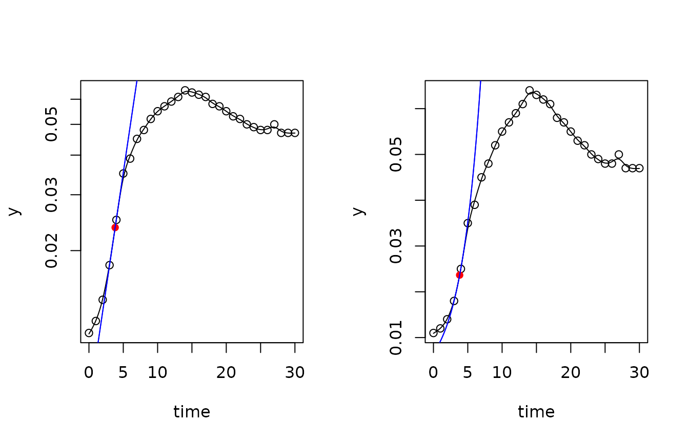
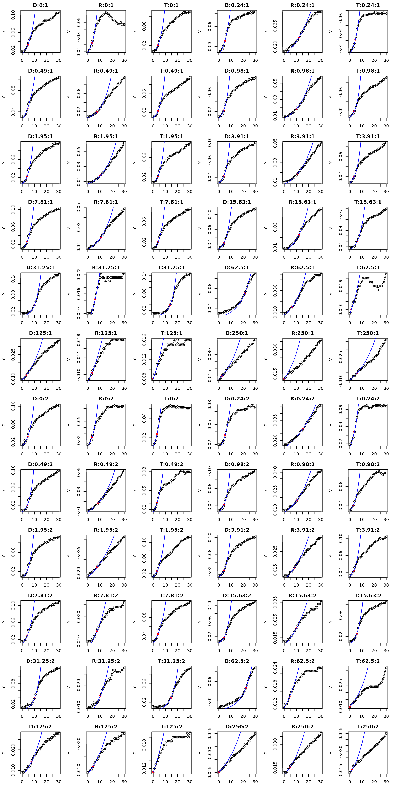
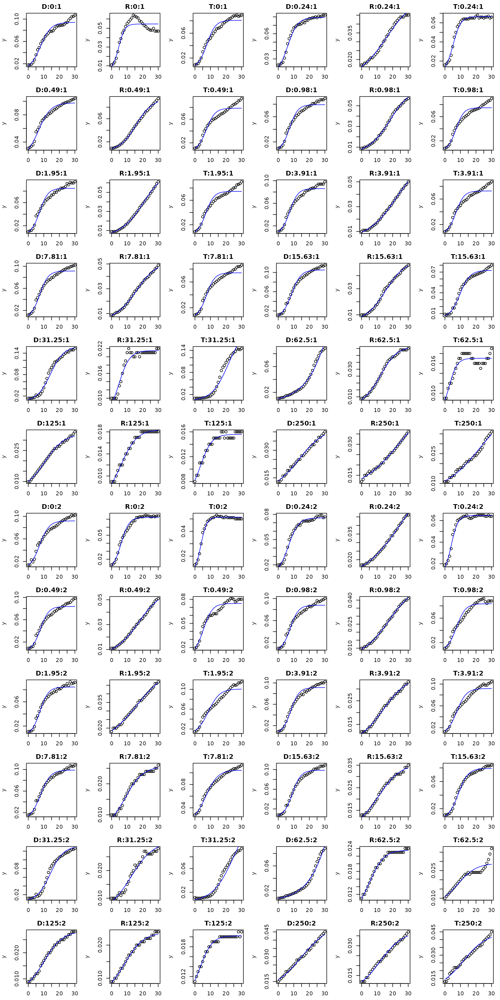
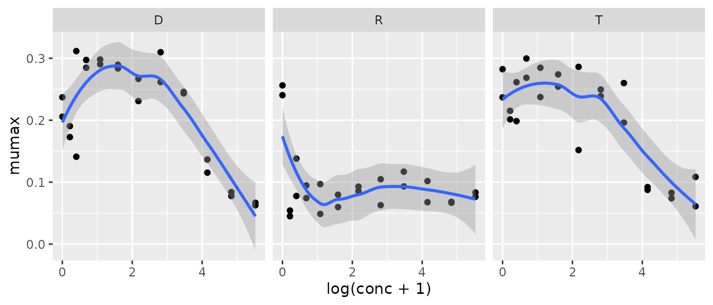
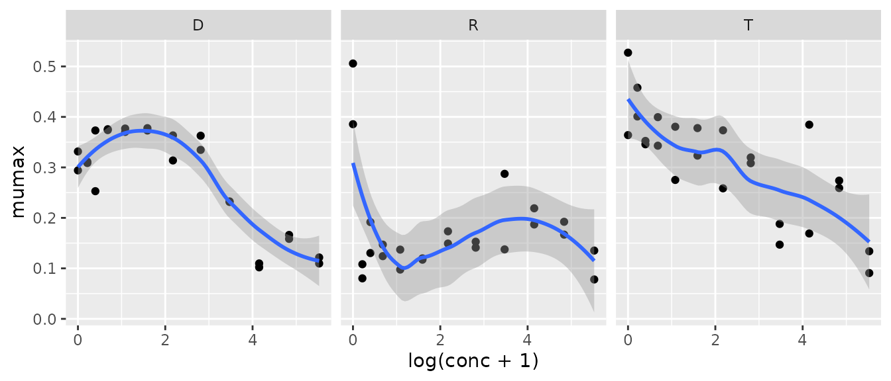

Estimation of Growth Rates with Package `growthrates`, Part 1: Introduction
Thomas Petzoldt
2025-08-28
Source:vignettes/Introduction.Rmd
Introduction.RmdPlease note: This document reflects work in progress and will be updated from time to time. The most recent copy can be found at https://tpetzoldt.github.io/growthrates/doc/Introduction.html
Introduction
The growth rate of a population is a direct measure of fitness. Therefore, determination of growth rates is common in many disciplines of theoretical and applied biology, e.g. physiology, ecology, eco-toxicology or pharmacology. This package aims to streamline estimation of growth rates from direct or indirect measures of population density (e.g. cell counts, optical density or fluorescence) determined in batch experiments or field observations. It should be applicable to different species of bacteria, archaea, protists, and metazoa, e.g. E. coli, Cyanobacteria, Paramecium, green algae or Daphnia.
The determination of growth rates from chemostat and semi-continuous cultures is currently not covered by the package, but we are open to include it, depending on your interest and the availability of data. The package is still under development and feedback is highly welcome.
Methods
The package includes three types of methods:
- Nonlinear fitting of parametric growth models like the logistic or
the Gompertz growth model. Parametric model fitting is done by using
package
FME(Flexible Modelling Environment) of Soetaert and Petzoldt (2010). In addition to growth models given in closed form (i.e. empirical regression equations or analytical solutions of differential equations) it is also possible to use numerically integrated systems of differential equation. Such models are then solved with package `deSolve’ (Soetaert, Petzoldt, and Setzer 2010). - Fitting of linear models to the period of exponential growth using the ``growth rates made easy method’’ of Hall et al. (2014) ,
- Nonparametric growthrate estimation by using smoothers. R contains
several powerful smoothing methods, that can leveraged for this purpose.
The currently implemented method uses function
smooth.spline, similar to the packagegrofit(Kahm et al. 2010).
The package contains methods to fit single data sets or complete
series of data sets organized in a data frame. It contains also
functions for extracting results (e.g. coef,
summary, deviance, obs,
residuals, rsquared and results)
and methods for plotting (plot, lines). The
implementation follows an object oriented style, so that the functions
above determine automatically which method is used for a given class of
objects.
Installation
The stable version of the package can be installed as usual from within R or RStudio like any other package, or with:
install.packages("growthrates")The development version and full source code are available from https://github.com/tpetzoldt/growthrates .
Data set
The data set for demonstrating main features of the package was provided by Claudia Seiler from one of a series of plate reader experiments carried out at the Institute of Hydrobiology of TU Dresden. It describes growth of three different strains of bacteria (D = Donor, R = Recipient, T = transconjugant) in dependence of a gradient of the antibiotics tetracycline.
After loading the package:
we load the data and inspect its structure with str:
## 'data.frame': 2232 obs. of 5 variables:
## $ strain : Factor w/ 3 levels "D","R","T": 3 3 3 3 3 3 3 3 3 3 ...
## $ replicate: int 2 2 2 2 2 2 2 2 2 2 ...
## $ conc : num 0 0 0 0 0 0 0 0 0 0 ...
## $ time : int 0 1 2 3 4 5 6 7 8 9 ...
## $ value : num 0.013 0.014 0.017 0.022 0.03 0.039 0.042 0.045 0.048 0.049 ...And we can also inspect the full data set with
View(growthrates) or look at the first few lines with
head:
head(bactgrowth)## strain replicate conc time value
## 1 T 2 0 0 0.013
## 2 T 2 0 1 0.014
## 3 T 2 0 2 0.017
## 4 T 2 0 3 0.022
## 5 T 2 0 4 0.030
## 6 T 2 0 5 0.039or we can plot raw data with ggplot:
library(ggplot2)
library(dplyr)
bactgrowth %>%
mutate(replicate=factor(replicate)) %>%
ggplot(aes(time, value)) +
geom_point(aes(color=replicate)) +
facet_grid(strain ~ conc)
Or the same with the lattice package:
library(lattice)
data(bactgrowth)
xyplot(value ~ time|strain + as.factor(conc), data = bactgrowth,
groups = replicate, pch = 16, cex = 0.5)While the lattice figure is not shown here, it has some
nice advantages. The call is even more compact and the applied formula
syntax
dependend_variable ~ explanation_variable | grouping_variable
can also be used in a similar manner by the growth curve fitting
functions starting with all_* to avoid loops or external
grouping.
Estimation of growth rates
Package growthrates can determine growth parameters from single experiments, from a complete series of experiments, or from subsets in one step. Here we start with an overview over the ``single subset’’-methods and show then examples for fitting growth models to the full data set. More examples can be found on the help pages of the package.
** Single data sets **
Single data sets can be analysed with functions
fit_easylinear, fit_growthmodels or
fit_splines. As a prerequisite, single data sets containing
only one treatment have to be extracted from a complete experiment,
which can be done with function `multsiplit’. In the following example,
the full data table is first split into a list of experiments according
to a vector of criteria and then the first experiment is extracted:
Easy Linear Method
splitted.data <- multisplit(bactgrowth, c("strain", "conc", "replicate"))
dat <- splitted.data[[1]]In the next step, model fitting is done, e.g. with the “easylinear” method:
fit <- fit_easylinear(dat$time, dat$value)This method fits segments of linear models to the log-transformed data and tries to find the maximum growth rate. Several functions exist to inspect the outcome of the model fit, e.g.:
summary(fit)##
## Call:
## lm(formula = y ~ x)
##
## Residuals:
## 1 2 3 4 5 6
## 0.02113 -0.03716 -0.03727 0.04552 0.06376 -0.05598
##
## Coefficients:
## Estimate Std. Error t value Pr(>|t|)
## (Intercept) -4.39425 0.06429 -68.35 2.74e-07 ***
## x 0.20490 0.01336 15.34 0.000105 ***
## ---
## Signif. codes: 0 '***' 0.001 '**' 0.01 '*' 0.05 '.' 0.1 ' ' 1
##
## Residual standard error: 0.05587 on 4 degrees of freedom
## Multiple R-squared: 0.9833, Adjusted R-squared: 0.9791
## F-statistic: 235.3 on 1 and 4 DF, p-value: 0.0001053
coef(fit) # exponential growth parameters## y0 y0_lm mumax lag
## 0.0180000 0.0123482 0.2048985 1.8392607
rsquared(fit) # coefficient of determination (of log-transformed data)## r2
## 0.9832876
deviance(fit) # residual sum of squares of log-transformed data## [1] 0.01248744Plotting can then be done either in log-scale or after re-transformation:

and in addition to the original method of Hall et al. (2014) it is also possible to modify the default settings of the algorithm:
fitx <- fit_easylinear(dat$time, dat$value, h = 8, quota = 0.95)
plot(fit)
lines(fitx, pch = "+", col = "blue")
Parametric nonlinear growth models
A parametric growth model consists of a mathematical
formula that describes the growth of a population
(e.g. grow_logistic) and its parameters
(e.g. y0, mumax, and K,).
Fitting a parametric model is the process of estimating
an optimal parameter set that minimizes a given quality criterion. Here
we use the method of least squares, also known as ordinary
least squares regression (OLS). As most of the growth models are
non-linear, we need always a goof set of start parameters
p. It is wise to choose values for start parameters
carefully by considering the main properties of the selected growth
model (e.g. that the carrying capacity K should be around
the observed maximum of the data), or by experimentation, i.e. plotting
the model together with the data. In order to prevent unrealistic
(e.g. negative) parameter values, it is optionally possible to specify
box-constraints (upper and lower). For
difficult problems one may consider to change the involved model fitting
algorithm from Marquardt ("Marq") to something else,
e.g. to "L-BFGS-B". Details can be found on the
?modFit help page.
p <- c(y0 = 0.01, mumax = 0.2, K = 0.1)
lower <- c(y0 = 1e-6, mumax = 0, K = 0)
upper <- c(y0 = 0.05, mumax = 5, K = 0.5)
fit1 <- fit_growthmodel(FUN = grow_logistic, p = p, dat$time, dat$value,
lower = lower, upper = upper)
p <- c(yi = 0.02, ya = 0.001, kw = 0.1, mumax = 0.2, K = 0.1)
lower <- c(yi = 1e-6, ya = 1e-6, kw = 0, mumax = 0, K = 0)
upper <- c(yi = 0.05, ya = 0.05, kw = 10, mumax = 5, K = 0.5)
fit2 <- fit_growthmodel(FUN = grow_twostep, p = p, time = dat$time, y = dat$value,
lower = lower, upper = upper)
coef(fit1)## y0 mumax K
## 0.01748268 0.20006907 0.09962612
coef(fit2)## yi ya kw mumax K
## 0.013140465 0.004005239 8.659565328 0.202312435 0.099735868
par(mfrow = c(1, 2))
plot(fit1)
lines(fit2, col = "red")
plot(fit1, log = "y")
lines(fit2, col = "red")
Differential equation models
In the two-step model abode, growth is described as a two-step process of adaption of inactive cells and logistic growth of active cells :
with amount of total organisms , and an adaption rate , intrinsic growth rate , and carrying capacity . The initial abundance (normally ) is splitted in two separate values, and that are by default also fitted.
The underlying ordinary differential equation (ODE) model has no simple analytical solution and is therefore solved numerically using a differential solver from package deSolve. Here both, the model and the solver are running in compiled code (C resp. Fortran), but it is of course also possible to define user-specified models in R code. Details can be found in Part 2 of the package documentation.
Selective parameter fitting
Despite the fact that the above model is solved as a differential
equation, the relatively high number of parameters may need special
care, too. In such cases, package growthrates allows to fit subsets of
parameters while setting the others to fixed values. In the following,
this is done by specifying a subset without initial abundances
and
in which:
fit3 <- fit_growthmodel(FUN = grow_twostep, p = p, time = dat$time, y = dat$value,
lower = lower, upper = upper, which = c("kw", "mumax", "K"))
summary(fit3)##
## Parameters:
## Estimate Std. Error t value Pr(>|t|)
## kw 9.791445 66.893493 0.146 0.885
## mumax 0.174802 0.015625 11.188 7.64e-12 ***
## K 0.101923 0.002429 41.958 < 2e-16 ***
## ---
## Signif. codes: 0 '***' 0.001 '**' 0.01 '*' 0.05 '.' 0.1 ' ' 1
##
## Residual standard error: 0.00452 on 28 degrees of freedom
##
## Parameter correlation:
## kw mumax K
## kw 1.0000 -0.8893 0.5405
## mumax -0.8893 1.0000 -0.7735
## K 0.5405 -0.7735 1.0000
coef(fit3)## yi ya kw mumax K
## 0.0200000 0.0010000 9.7914448 0.1748016 0.1019230
plot(fit3)
We see that summary shows only the fitted parameters
whereas coef contains the full set.
Note however, that start values need to be given in p
for all model parameters, i.e. for both the fitted and the fixed ones,
while upper and lower bounds for the fixed
parameters can be omitted.
Nonparametric smoothing splines
Smoothing splines are a quick method to estimate maximum growth. The method is called nonparametric, because the growth rate is directly estimated from the smoothed data without being restricted to a specific model formula.
dat <- splitted.data[[2]]
time <- dat$time
y <- dat$value
## automatic smoothing with cv
res <- fit_spline(time, y)
par(mfrow = c(1, 2))
plot(res, log = "y")
plot(res)
coef(res)## y0 mumax
## 0.006562443 0.335991063Fit multiple data sets without loops
Fitting multiple data sets at once is possible with functions
all_easylinear, all_growthmodels and
all_splines. Usage is similar for all methods, and the
parameters are analogous to the single-fit methods. Both, the easy
growth rates and the smooting splines method are quite robust. In
contrast to this, parametric fits with function
all_growthmodels need more care and a little bit more
computational power.
Again, special emphasis should be given to the selection of good
starting points. In addition, it is possible to select an alternative
optimization algorithm, to enable additional output (trace)
or to fine-tune their optimization control parameters. Nevertheless, it
should be noted that parametric models have more explanatory power and
may therefore be advantageous for basic research.
Nonlinear optimization is done with parallelized code, so multi-core computers can speed up computation.
Fit smoothing splines to multiple data
It can be a good idea, to start with a nonparametric approach like
the smoothing spline method to get a first impression and, potentially,
to derive start parameters for a parametric model. In the following, we
show an example with the smoothing spline method. The function uses a
formula interface with the syntax:
dependent_variable ~ independent_variable | group1 + group 2 + ...:
In this example, smoothness is set to a moderate value
(spar = 0.5). Other values between zero and one will result
in different degrees of smoothing. If spar is omitted,
leave-one-out cross-validation is used to determine smoothness
automatically. This works best if the samples over time are true
replicates from independent experimental units, instead of
pseudo-replicates with potential autocorrelation.
many_spline_fits <- all_splines(value ~ time | strain + conc + replicate,
data = bactgrowth, spar = 0.5)
par(mfrow = c(12, 6))
par(mar = c(2.5, 4, 2, 1))
plot(many_spline_fits)
Fit parametric models to multiple data
Package growthrates allows to fit parametric models
to a series of grouped data. The formula interface of function
all_growthmodels allows to include the name of the
nonlinear model (the grow_....-function) and the name of
the independent variable (e.g. time) as its first argument,
for example as grow_logistic(time, parms). The second
argument parms is a dummy argument; its name does currently
not (yet) matter. Model fitting can make use of multiple CPU cores to
speed up computation. If the ncores argument is omitted,
the number of cores is automatically detected while setting
ncores = 1 can be useful for debugging.
In the following, let’s fit a Baranyi growth model (Baranyi and Roberts 1995) to the data, a model that considers the lag phase as as a period to build up ``critical substances’’ needed for growth. The model is based on a system of two differential equations for which under some simplifying assumptions an analytical solution was presented.
In a first attempt, we fit all parameters of the model:
## initial parameters and box constraints
p <- c(y0 = 0.03, mumax = .1, K = 0.1, h0 = 1)
lower <- c(y0 = 0.001, mumax = 1e-2, K = 0.005, h0 = 0)
upper <- c(y0 = 0.1, mumax = 1, K = 0.5, h0 = 10)
## fit growth models to all data using log transformed residuals
many_baranyi1 <- all_growthmodels(
value ~ grow_baranyi(time, parms) | strain + conc + replicate,
data = bactgrowth,
p = p, lower = lower, upper = upper,
transform = "log", ncores = 2)whereas in a second trial, h0 is fixed to a common value
to avoid that h0 consumes parts of the effect because of
interdependency between h0 and mumax:
## use coefficients of first fit as new initial parameters
pp <- coef(many_baranyi1)
## but set h0 to a fixed value
pp[, "h0"] <- 0.65
## re-fit models
many_baranyi2 <- all_growthmodels(
value ~ grow_baranyi(time, parms) | strain + conc + replicate,
data = bactgrowth,
p = pp, lower = lower, upper = upper,
which = c("y0", "mumax", "K"), transform = "log", ncores = 2)The result of the second fit is shown in the following figure. It may be noted that even better fits are possible with models with more parameters, e.g. Huang (2011), again at the cost that the effect of antibiotics is distributed over several correlated parameters instead of an effect of the maximum growth rate.

Dose Respone Curves
Dependency of growth rate on antibiotic concentration for the three strains with the spline fit and the Baranyi model. Here we first extract a table of results from the fitted objects:
The resulting data frames follow a “tidy structure” ensuring compatibility with ggplot2.
Nonparameric Spline Fits
many_spline_res %>%
ggplot(aes(log(conc + 1), mumax)) +
geom_point() +
geom_smooth() +
facet_wrap(~ strain)## `geom_smooth()` using method = 'loess' and formula = 'y ~ x'
Parametric Baranyi Model
many_baranyi2_res %>%
ggplot(aes(log(conc + 1), mumax)) +
geom_point() +
geom_smooth() +
facet_wrap(~ strain)## `geom_smooth()` using method = 'loess' and formula = 'y ~ x'
As an alternative, visualization is also possible with R’s “base graphics” functions or with lattice graphics:
xyplot(mumax ~ log(conc+1)|strain, data = many_spline_res, layout = c(3, 1))
xyplot(mumax ~ log(conc+1)|strain, data = many_baranyi2_res, layout = c(3, 1))Describing the observed dependency can again be approached with nonparametric methods or parametric functional response curves, which may be done using a specialized package for dose-response curves, for example package drc (Ritz and Streibig 2005).
Acknowledgments
Many thanks to Claudia Seiler for the data set, and to the R Core Team (R Core Team 2015) for developing and maintaining R. This documentation was written using knitr (Xie 2014) and rmarkdown (Allaire et al. 2015).
References
Copyright and original author: tpetzoldt, 2025-08-28